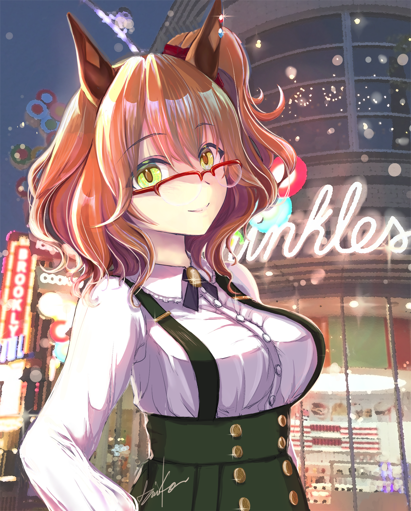
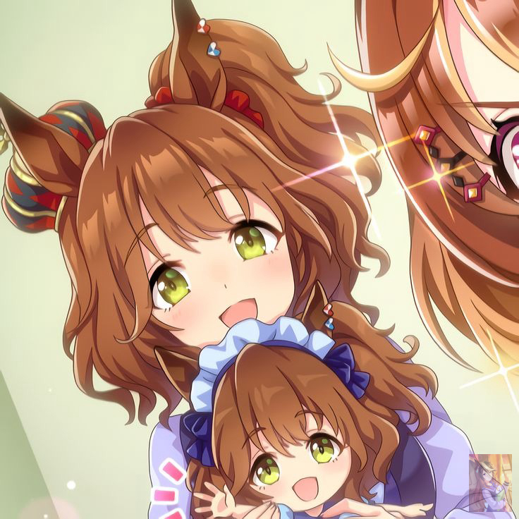
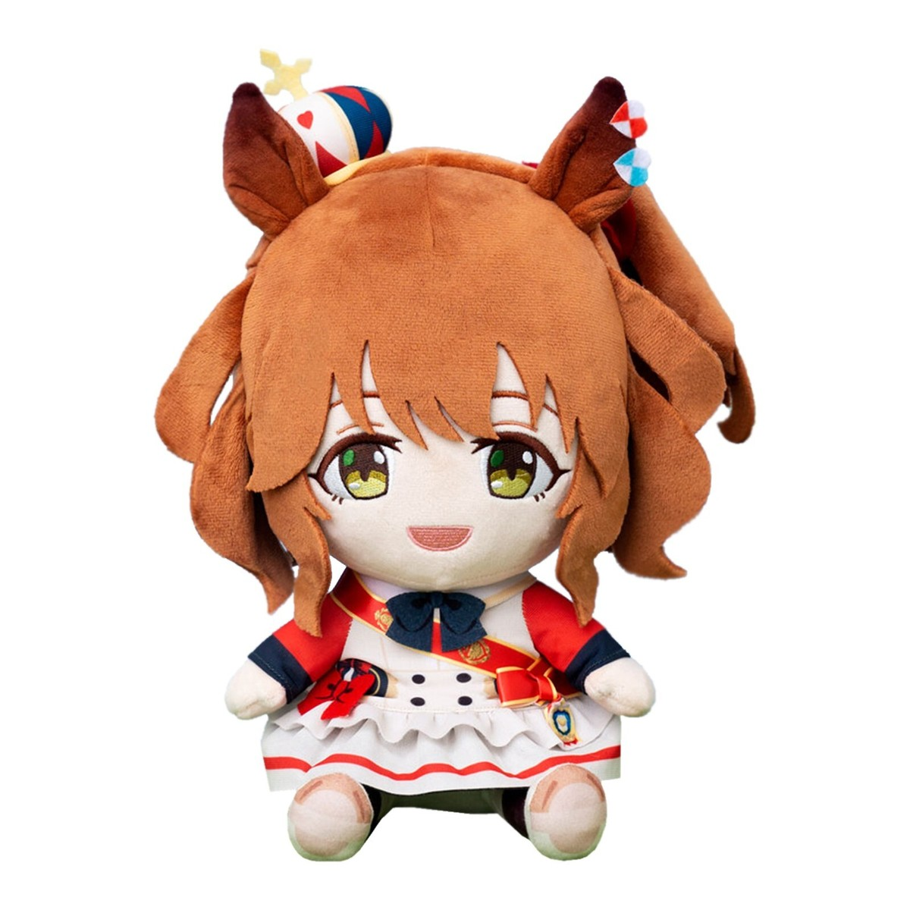

Quem é a Aston Machan?
Aston Machan na Vida real é um Cavalo que correu ao lado de Vodka e Daiwa Scarlet e Ganhou 5 Corridas
A Aston Machan Tambem é um Cavalo No jogo Umamusume que a Maioria dos Fans adoram
Galeria


